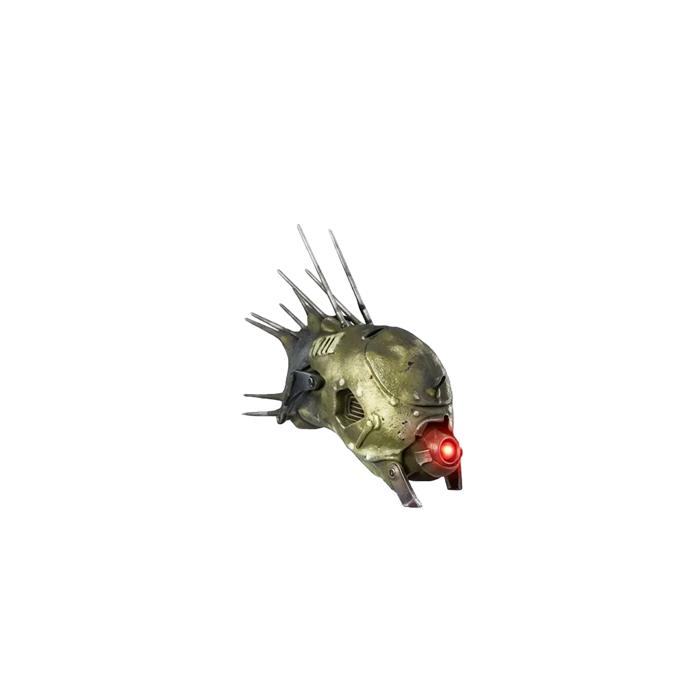

Musisz grać w trybie Klątwa na poziomie przynajmniej Tier 1.
AKTUALNIE: Portal możesz otworzyć w dowolnej rundzie, ale uważaj – zombie podczas samej próby będą miały siłę tych z 40. rundy!
UWAGA: Musisz przegrać 3 rundy specjalne.

WAŻNE: Gdy zbierzesz wszystkie 5 myszek i wystraszysz 5 kotów, NIE kończ jeszcze tego zadania (nie patrz na koty na dachu). Musimy iść dalej z planem.
Po poprawnym ukończeniu trzech sekwencji obok Was pojawi się portal.